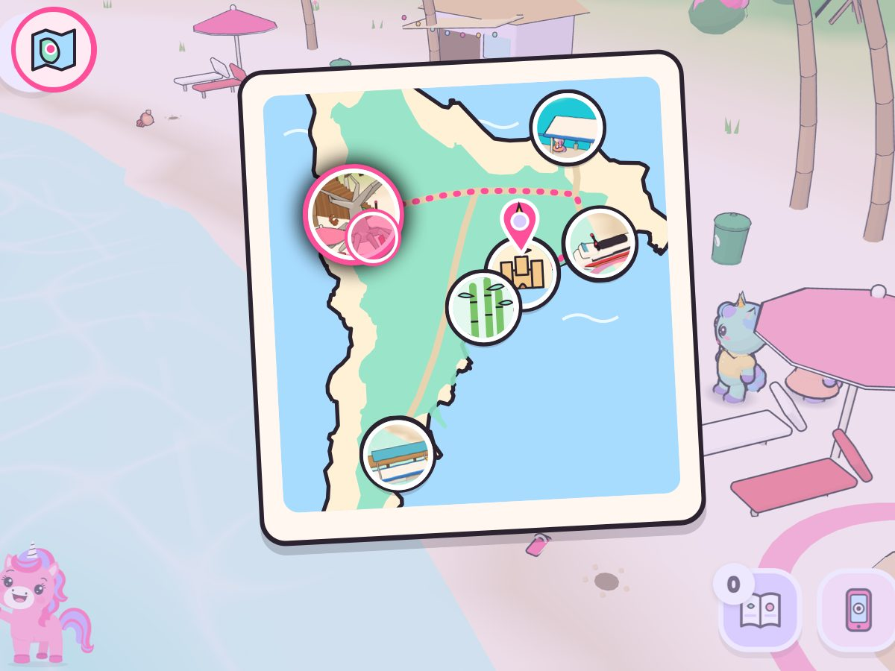

Kaylee's Island Map
👆 Open her toy map, tap a beach, follow the glowing shells.
- 🐚tap a beach, follow the shells
- 🚕far ones: the shells hop in the taxi
- 🚩her flags and animals fill the map
She learns: Reading a map: where she is, which beach is which.
Silly: Tap the sea on the map: a whale splashes out.
Why her: A map that fills with her pink flags is her own trophy board.
🗺️ Top-left button: her map, her pin always on it
🚕 Taxi: tap a beach on its map, it drives straight there